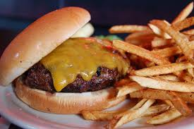
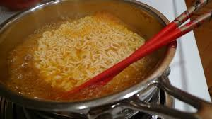

Pizza is by far one of my favorite foods due to its delicious flavors. First originated in Italy pizzy is pretty simple food, it consists of dough, sauce, cheese, and pepperoni. (with other toppings) It also goes well with many seasonings and is easy to eat.
Image from: Wikimedia Commons, by an unknown author.
2. Cheeseburger (United States)
The cheeseburger is one of my favorite foods as well. You can use so many combinations on them and seasonings. You can get them almost anywhere in the United States. You can get them plain, with cheese, with ketchup and more!

Image from: Flickr, by an unknown author
3. Chicken Fingers (United States)
Chicken Fingers are one of my favorite foods because they are very simple and can be eaten and made in so many different ways. You can dip them with barbecue, and there are many different sizes like you can also get nuggets. Seasoning also works really good
Image from: Wikimedia Commons, by an unknown author
4. Ramen (Japan)
Ramen is also one of my favorite foods because it is easy to make and eat. It also comes in many different flavors and types. My personal favorite type of ramen is the Maruchan chili flavor. I prep my ramen when I make it by boiling water in the microwave, then putting the ramen in the boling water and letting it rest with a lid over it for 20 minutes and then I eat it!

Image from: Flickr, by an unknow author.
5. BROCOLLI (Italy?)
BROCOLLI IS THE BEST FOOD IN THE ENTIRE WORLD I DO NOT HATE BROCOLLI AT ALL AND HONESTLY WHO DOESNT LIKE BROCOLLI.